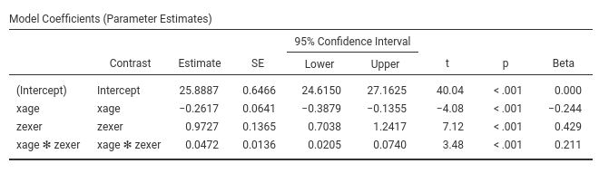
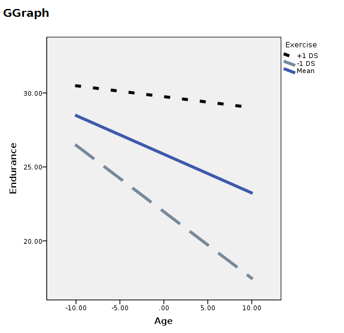

Rosetta store: moderation
keywords jamovi, SPSS, R, Multiple regression, moderated regression, simple slopes, PROCESS
0.9.1
Draft version, mistakes may be around
Here you can find comparisons of results obtained in jamovi GAMLj, pure R, and SPSS. When not explicitly discussed, the code of different software is written with the aim of obtaining identical results across programs (not necessarily with the most efficient strategy).
In this example we tackle a moderated regression analysis with simple slopes analysis and simple slopes graphs. Data are from Cohen et al 2003 and can be downloaded here. GAMLj analyses on this dataset (without comparisons with other software) can be found in GLM: Multiple regression, moderated regression, and simple slopes.
The research design
The research is about physical endurance associated with age and
physical exercise. 245 participants were measured while jogging on a
treadmill. Edurance was measured in minutes (‘yendu’ in the file).
Participants’ age (xage in years) and number of years of
physical exercise (zexer in years) were recorded as well
(in
rjamoviExploration->Descriptive`)
The researcher is interested in studying the relationships between
endurance, age, and exercising, with the hypothesis that the effect of
age (not unexpectedly negative) is moderated by exercise, such that the
more participants work out (higher levels of exer) the less
age negatively affects endurance.
For a longer discussion please check out GLM: Multiple regression, moderated regression, and simple slopes.
GAMLj GLM
jamovi
rmodulename()` module for GLM requires to set the variables
in the right field depending on their role in the model and their
type.

Thus, we push yendu in the
Dependent Variable field and both xage and
zexer in the Covariates field, being both
variables quantitative.
As soon as the variables are set, jamovi fills in the tables in the
output panel with the estimation results. However, it is worth noticing
that the statistical model has been defined by default by the software:
We can see that in the Model tab.
jamovi, following a somehow old tradition established by SPSS, automatically includes continuous independent variables in the model without their interaction. For categorical variables the default behavior is to include both main effects and interactions.
To include the interaction we simply add the interaction effect in
the Model Terms under the Model tab.

The interaction is pushed in the Model Terms by
selecting the variables on the left and click interaction
in the “arrow” cascade menu.

Results
Let’s us first focus on the parameters estimates, the B coefficients.

GAMLj, by default, centers the
variables and estimate main effects and interactions as expected by
modern analysts. If one needs more advanced centering,
Covariates Scaling option panel can be of interest.
One can also report the betas (last column in the
Model Coefficients table). Please notice that jamovi GLM
the estimates of the betas are correct also in the presence of the
interaction, because the variables are standardized before the
interaction term is computed.
Simple Slopes
We can now probe the interaction. We go to
Simple effects tab and select xage as
Simple effec variable and zexer as
Moderator. In this way we obtain the effect of age computed
for high exercise (zexer centered to 1 SD above average,
4.78), the main effect of age (zexer centered to its mean,
that is 0) and the effect of age computed for low exercise
(zexer centered to -1 SD above average, -4.78).
jamovi GLM produces both the F-tests and the parameter estimates for the simple slopes. The parameters estimates are:

and the F-tests are:
<img src=“rosetta/moderation/r.GAMLj3.png” class=“img-responsive” alt=““>
Simple Slopes Plot
We can get a clear picture of the interaction by asking for a plot. Also the plot module takes care of centering the variables in a way that makes the plot clearly understandable.

It plots the effect of the Horizontal axis variable for
three levels (-1 SD, mean, +1 SD) of the Separate Lines
variable.

The nice plot we get shows the simple effects (simple equations to be precise) with the prediction confidence intervals indicated by the colored shades around the lines. If needed, the confidence intervals can be substituted with the standard errors of the estimates or they can be removed completely.
Finaly, in order to give a more honest account of the model fit, we can visualize the simple slopes over the plots of the actual data (GAMLj v. >= 0.9.3).

Pure R
By pure R I mean using R-core with the minimum number of additional packages. Of course, there’s always a package in R that wraps things up for us, but here we assume we do not know of any.
First load the data and center the independent variables
dat<-read.csv("../data/exercise.csv")
dat$zexer<-dat$zexer-mean(dat$zexer)
dat$xage<-dat$xage-mean(dat$xage)and then we estimate the model with the interaction between
xage and zexer
##
## Call:
## lm(formula = yendu ~ xage * zexer, data = dat)
##
## Residuals:
## Min 1Q Median 3Q Max
## -21.165 -6.939 0.269 6.300 21.299
##
## Coefficients:
## Estimate Std. Error t value Pr(>|t|)
## (Intercept) 25.88872 0.64662 40.037 < 0.0000000000000002 ***
## xage -0.26169 0.06406 -4.085 0.000060074787 ***
## zexer 0.97272 0.13653 7.124 0.000000000012 ***
## xage:zexer 0.04724 0.01359 3.476 0.000604 ***
## ---
## Signif. codes: 0 '***' 0.001 '**' 0.01 '*' 0.05 '.' 0.1 ' ' 1
##
## Residual standard error: 9.7 on 241 degrees of freedom
## Multiple R-squared: 0.2061, Adjusted R-squared: 0.1962
## F-statistic: 20.86 on 3 and 241 DF, p-value: 0.000000000004764If one requires the standardized solution, the same procedure can be done after standardizing the variables
dat$zexer_z<-scale(dat$zexer)
dat$xage_z<-scale(dat$xage)
dat$yendu_z<-scale(dat$yendu)
model_z<-lm(yendu_z~xage_z*zexer_z,data=dat)
summary(model_z)##
## Call:
## lm(formula = yendu_z ~ xage_z * zexer_z, data = dat)
##
## Residuals:
## Min 1Q Median 3Q Max
## -1.95626 -0.64141 0.02486 0.58225 1.96869
##
## Coefficients:
## Estimate Std. Error t value Pr(>|t|)
## (Intercept) -0.05933 0.05977 -0.993 0.321857
## xage_z -0.24446 0.05985 -4.085 0.000060074787 ***
## zexer_z 0.42933 0.06026 7.124 0.000000000012 ***
## xage_z:zexer_z 0.21075 0.06064 3.476 0.000604 ***
## ---
## Signif. codes: 0 '***' 0.001 '**' 0.01 '*' 0.05 '.' 0.1 ' ' 1
##
## Residual standard error: 0.8965 on 241 degrees of freedom
## Multiple R-squared: 0.2061, Adjusted R-squared: 0.1962
## F-statistic: 20.86 on 3 and 241 DF, p-value: 0.000000000004764Simple Slope
Recall that in a linear model with interaction, the simple slope (the B coefficient one gets from the model associated with the IV) is the effect of one independent variable estimated for the other variable equal to zero. Thus, by centering the moderator at different values, we can obtain the slope of a variable for any value of the moderator by centering the moderator to that value.
We use +- SD.
# centering zexer to +SD and -SD
dat$zexer_high<-(dat$zexer)-(mean(dat$zexer)+sd(dat$zexer))
dat$zexer_low<-(dat$zexer)-(mean(dat$zexer)-sd(dat$zexer))
model_zh<-lm(yendu~xage*zexer_high,data=dat)
(sumr_zh<-summary(model_zh))##
## Call:
## lm(formula = yendu ~ xage * zexer_high, data = dat)
##
## Residuals:
## Min 1Q Median 3Q Max
## -21.165 -6.939 0.269 6.300 21.299
##
## Coefficients:
## Estimate Std. Error t value Pr(>|t|)
## (Intercept) 30.53366 0.90253 33.831 < 0.0000000000000002 ***
## xage -0.03609 0.09025 -0.400 0.689641
## zexer_high 0.97272 0.13653 7.124 0.000000000012 ***
## xage:zexer_high 0.04724 0.01359 3.476 0.000604 ***
## ---
## Signif. codes: 0 '***' 0.001 '**' 0.01 '*' 0.05 '.' 0.1 ' ' 1
##
## Residual standard error: 9.7 on 241 degrees of freedom
## Multiple R-squared: 0.2061, Adjusted R-squared: 0.1962
## F-statistic: 20.86 on 3 and 241 DF, p-value: 0.000000000004764##
## Call:
## lm(formula = yendu ~ xage * zexer_low, data = dat)
##
## Residuals:
## Min 1Q Median 3Q Max
## -21.165 -6.939 0.269 6.300 21.299
##
## Coefficients:
## Estimate Std. Error t value Pr(>|t|)
## (Intercept) 21.24379 0.93371 22.752 < 0.0000000000000002 ***
## xage -0.48729 0.09214 -5.289 0.000000276122 ***
## zexer_low 0.97272 0.13653 7.124 0.000000000012 ***
## xage:zexer_low 0.04724 0.01359 3.476 0.000604 ***
## ---
## Signif. codes: 0 '***' 0.001 '**' 0.01 '*' 0.05 '.' 0.1 ' ' 1
##
## Residual standard error: 9.7 on 241 degrees of freedom
## Multiple R-squared: 0.2061, Adjusted R-squared: 0.1962
## F-statistic: 20.86 on 3 and 241 DF, p-value: 0.000000000004764we can extract only the slopes we are interested in and show them in a table.
## in the summary object, the effect of age is in the second row. ##
mat<-rbind(sumr_zl$coefficients[2,],sumr$coefficients[2,],sumr_zh$coefficients[2,])
rownames(mat)<-c("exer at -SD","exer at mean","exer at +SD")
mat## Estimate Std. Error t value Pr(>|t|)
## exer at -SD -0.4872940 0.09213609 -5.288851 0.0000002761221
## exer at mean -0.2616898 0.06406384 -4.084828 0.0000600747870
## exer at +SD -0.0360855 0.09025369 -0.399823 0.6896410518861Simple slopes plot
ggplot2 is required for a nice graph.
library(ggplot2)
p<-ggplot(dat, aes(x = xage, y = yendu)) + geom_point(color="gray")
p<-p+ geom_abline(aes(color ="exer -SD",intercept = sumr_zl$coefficients[1,1],slope =sumr_zl$coefficients[2,1] ))
p<-p+ geom_abline(aes(color ="exer at mean",intercept = sumr$coefficients[1,1],slope =sumr$coefficients[2,1] ))
p<-p+ geom_abline(aes(color ="exer at +SD",intercept = sumr_zh$coefficients[1,1],slope =sumr_zh$coefficients[2,1] ))
p You can embellish the plots as any ggplot graph. For example:
R emmeans
In R there are many ways to obtain the same solution ( see simple slopes
with laavan package , for instance), but here I’d like to test
emmeans::emtrends, because it makes things so easy that it
is really worth mentioning. Furthermore, emmeans (the
offspring of lsmeans) is very powerfull, and does a lot of cool things,
so getting to know it is always a good idea. Details here.
library(emmeans)
### define the levels at which we want the simple slope #####
### in this case, -SD, mean, -SD
zlevels<-c(-sd(dat$zexer),mean(dat$zexer),+sd(dat$zexer))
### then we run emtrends where specs is the moderator, var= the IV, and "at" the levels ##
emmeans::emtrends(model,specs = "zexer",var = "xage",at=list(zexer=zlevels))## zexer xage.trend SE df lower.CL upper.CL
## -4.78 -0.4873 0.0921 241 -0.669 -0.306
## 0.00 -0.2617 0.0641 241 -0.388 -0.135
## 4.78 -0.0361 0.0903 241 -0.214 0.142
##
## Confidence level used: 0.95Pretty sleek!
By the way, you can condition the simple slopes to any value you want. Percentile? let’s do it:
library(emmeans)
### define the levels at which we want the simple slope #####
### in this case, 0, 25th, 50th, and 75th and 10oth percentile
(perc<-quantile(dat$zexer))## 0% 25% 50% 75% 100%
## -10.6734698 -3.6734698 0.3265302 3.3265302 15.3265302### then we run emtrends where specs is the moderator, var= the IV, and "at" the levels ##
emmeans::emtrends(model,specs = "zexer",var = "xage",at=list(zexer=perc))## zexer xage.trend SE df lower.CL upper.CL
## -10.673 -0.766 0.1598 241 -1.0807 -0.4512
## -3.673 -0.435 0.0820 241 -0.5968 -0.2736
## 0.327 -0.246 0.0641 241 -0.3726 -0.1199
## 3.327 -0.105 0.0776 241 -0.2575 0.0484
## 15.327 0.462 0.2167 241 0.0356 0.8893
##
## Confidence level used: 0.95Pure SPSS
In SPSS we can follow the same procedure we used in pure R,
estimating three models after centering the moderator at different
levels. This is easy but tediuos , so we move to a different strategy.
We can use something similar to R emmeans strategy, and
estimate contrasts on the (centered) model coefficients using
GLM contrasts option.
Before estimating the model, we center the independent variables, so we need to know their means.
compute cexer=zexer-10.67.
compute cage=xage-49.18.
and use the centered variable to estimate the model
GLM yendu WITH czexer cxage
/INTERCEPT=INCLUDE
/PRINT PARAMETER
/DESIGN= cage cexer cage*cexer.
SPSS returns both the F-tests and the parameter estimates (with t-tests and p-value). We look at the latter ones.

Now we can play with the model for estimating contrasts on its parameters. Recall that a simple slope for \(x\) is simple \(B_x+ B_{xz} \cdot z_0\), for some value of \(z_0\) of the moderator. Thus, for a centered model,the simple slope of \(x\) for \(z=+SD\) is \(B_x+ B_{xz} \cdot SD_z\), and for \(z=-SD\), we get \(B_x+ B_{xz} \cdot -SD_z\).
Estimation and testing for combinations of model parameters can be
obtained in SPSS with /LMATRIX subcommand.
/LMATRIX subcommand syntax is
/LMATRIX label term1 code1 term2 code2 etc. In our case,
term1 is cxage, code1 is 1, term2 is the
interaction cxage*czexer and code2 is one SD of
zexer.
GLM yendu WITH czexer cxage
/INTERCEPT=INCLUDE
/PRINT PARAMETER
/LMATRIX ="Moderator -1 SD" cage 1 cage*cexer -4.77
/LMATRIX ="Moderator +1 SD" cage 1 cage*cexer 4.77
/DESIGN= cxage czexer cxage*czexer.
In the contrast results, we find the estimates, the confidence intervals and the p-values. There’re also the F-test tables, which are in line with the GAMLj F-tests.

Simple slopes plot
To obtains a simple slope plot we need to write some numbers in the systax. That’s a drag! The good news is that it works for any king of model, glm, generalized, EEM, mixed, hierarchical etc. etc.
We build a dataset with all combinations of interesting levels (SD and mean) of the independent variables.
ORTHOPLAN /FACTORS=x (10 0 10) z (-4 0 4) /REPLACE.
then compute the expected values using the centered model coefficients.
compute a=25.86.
compute bx=-.262.
compute bz=.973.
compute bint=.047.
compute y=a+bx*x+bz*z+bint*x*z.An then we plot the variable. Plotting can be done using standard plots and tweak the graph manually.
GRAPH
/SCATTERPLOT(BIVAR)=x WITH y BY z.
You can manually change the plot, but it will come back ugly when you re-run it. To get nice graphical results without manual intevention you can use SPSS GGRAPH with GPL (not explained here) and get something like this.
string mod(a10).
recode z (-4="-1 DS" ) (0="Mean") ( 4="+1 DS") into mod.
execute.
GGRAPH
/GRAPHDATASET NAME="Data" VARIABLES =ALL
/GRAPHSPEC SOURCE=INLINE .
BEGIN GPL
SOURCE: s=userSource( id( "Data" ) )
DATA: x=col( source(s), name( "x" ) )
DATA: y=col( source(s), name( "y" ) )
DATA: mod=col( source(s), name( "mod" ) , unit.category())
GUIDE: legend(aesthetic(aesthetic.shape), label("Exercise"))
GUIDE: legend(aesthetic(aesthetic.color), label("Exercise"))
SCALE: cat(aesthetic(aesthetic.shape), map(("-1 DS",shape.dash_2x),("Media",shape.solid),("+1 DS",shape.half_dash)))
SCALE: cat(aesthetic(aesthetic.color), map(("+1 DS",color.black),("Media",color.grey),("-1 DS",color.lightslategray)))
GUIDE: axis(dim(1), label("Age"))
GUIDE: axis(dim(2), label("Endurance"))
ELEMENT: line( position(smooth.linear(x*y)),shape(mod),color(mod),size(size."5px"))
END GPL.
SPSS PROCESS
PROCESS is an add-on for SPSS that simplifies computation of simple slopes and does many more things (expecially mediation and moderated mediation). It is very well documented here.
In order to check if the previous results are in line with PROCESS, we estimated the model again as follows:

and get the simple slopes we needed

Please notice that we estimated the centered model for the sake of comparability, but in PROCESS you do not need to center the variables because the macro will center them for you. PROCESS produces also the syntax for plotting the simple slopes, using the strategies we used in pure SPSS section.
Comments?
Got comments, issues or spotted a bug? Please open an issue on GAMLj at github or send me an email